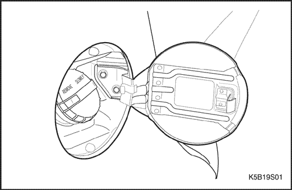
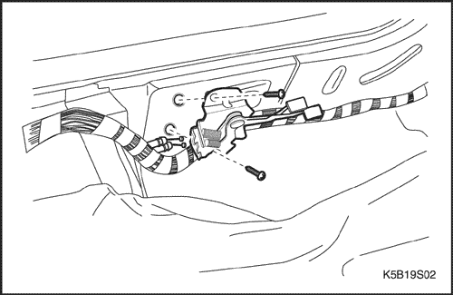
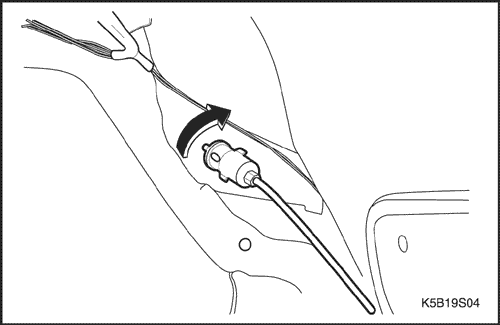
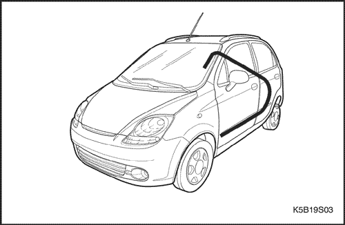
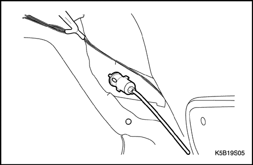
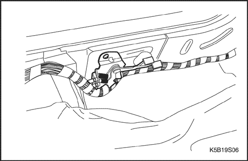

SECCIÓN 9S
PARTE TRASERA DE LA CARROCERÍA
ESPECIFICACIONES
Especificaciones de apriete de la sujeción
Aplicación | N•m | Lb-pie | Lb-pulg. |
Tornillos del tirador y cable de accionamiento a distancia de la compuerta de llenado de combustible | 2 | - | 18 |
MANTENIMIENTO Y REPARACIÓN
Servicio en el vehículo



Compuerta de llenado de combustible
Procedimiento de desmontaje
- Tire de la palanca de apertura de la compuerta de llenado de combustible para abrirla.
- Quite los tornillos y la compuerta de llenado de combustible.
Procedimiento de montaje
- Monte la compuerta de llenado de combustible con sus tornillos.

Tirador y cable de accionamiento a distancia de la compuerta de llenado de combustible
(Indicado para conducción a izquierdas, conducción a derechas similar)
Procedimiento de desmontaje
- Desmonte el panel de guarnecido basculante delantero haciendo palanca. Consulte la Sección 9G, Guarnecido interior.
- Quite los tornillos y desmonte el tirador de accionamiento a distancia de la compuerta de llenado de combustible.
- Desconecte el cable de la compuerta de llenado de combustible.

- Desmonte el panel inferior de guarnecido del montante B. Consulte la Sección 9G, Guarnecido interior.
- Desmonte el panel de guarnecido basculante trasero haciendo palanca. Consulte la Sección 9G, Guarnecido interior.
- Desmonte el panel de guarnecido del paso de rueda del maletero haciendo palanca. Consulte la Sección 9G, Guarnecido interior.
- Desmonte el trinquete de la compuerta del depósito de combustible.

- Desmonte el cable de la compuerta de llenado de combustible.
Procedimiento de montaje
- Conecte el cable de accionamiento a distancia en la compuerta de llenado de combustible.
- Sujete el cable con su tira.

- Monte el trinquete de la compuerta del depósito de combustible.
- Monte el panel de guarnecido del paso de rueda del maletero. Consulte la Sección 9G, Guarnecido interior.
- Monte el panel de guarnecido basculante trasero. Consulte la Sección 9G, Guarnecido interior.
- Monte el panel de guarnecido del montante B inferior. Consulte la Sección 9G, Guarnecido interior.

- Conecte el cable al tirador de accionamiento a distancia en la compuerta de llenado de combustible.
- Monte el tirador de accionamiento a distancia con sus tornillos en la compuerta de llenado de combustible.
Tirador y cable de accionamiento a distancia del portón trasero
(Indicado para conducción a izquierdas, conducción a derechas similar)
Procedimiento de desmontaje
- Desmonte el panel de guarnecido basculante delantero haciendo palanca. Consulte la Sección 9G, Guarnecido interior.
- Quite los tornillos y el tirador de accionamiento a distancia del portón trasero.
- Desmonte el panel inferior de guarnecido del montante B. Consulte la Sección 9G, Guarnecido interior.
- Desmonte el panel de guarnecido basculante trasero haciendo palanca. Consulte la Sección 9G, Guarnecido interior.
- Desmonte el panel de guarnecido del paso de rueda del maletero haciendo palanca. Consulte la Sección 9G, Guarnecido interior.
- Desconecte el cable del trinquete del tirador del portón trasero. Consulte la Sección 9P, Puertas.
- Desmonte el cable de accionamiento a distancia del portón trasero.
Procedimiento de montaje
- Conecte el cable de accionamiento a distancia en el trinquete del portón trasero.
- Sujete el cable con su tira.
- Monte el panel de guarnecido del paso de rueda del maletero. Consulte la Sección 9G, Guarnecido interior.
- Monte el panel de guarnecido basculante trasero. Consulte la Sección 9G, Guarnecido interior.
- Monte el panel de guarnecido del montante B inferior. Consulte la Sección 9G, Guarnecido interior.
- Conecte el cable de accionamiento a distancia del portón trasero al tirador.
- Monte el tirador de accionamiento a distancia del portón trasero con sus tornillos.
DESCRIPCIÓN GENERAL Y FUNCIONAMIENTO DEL SISTEMA
Compuerta de llenado de combustible
La compuerta de llenado de combustible va montada en el hueco de la boca de llenado del depósito de combustible, en el lado derecho del vehículo.